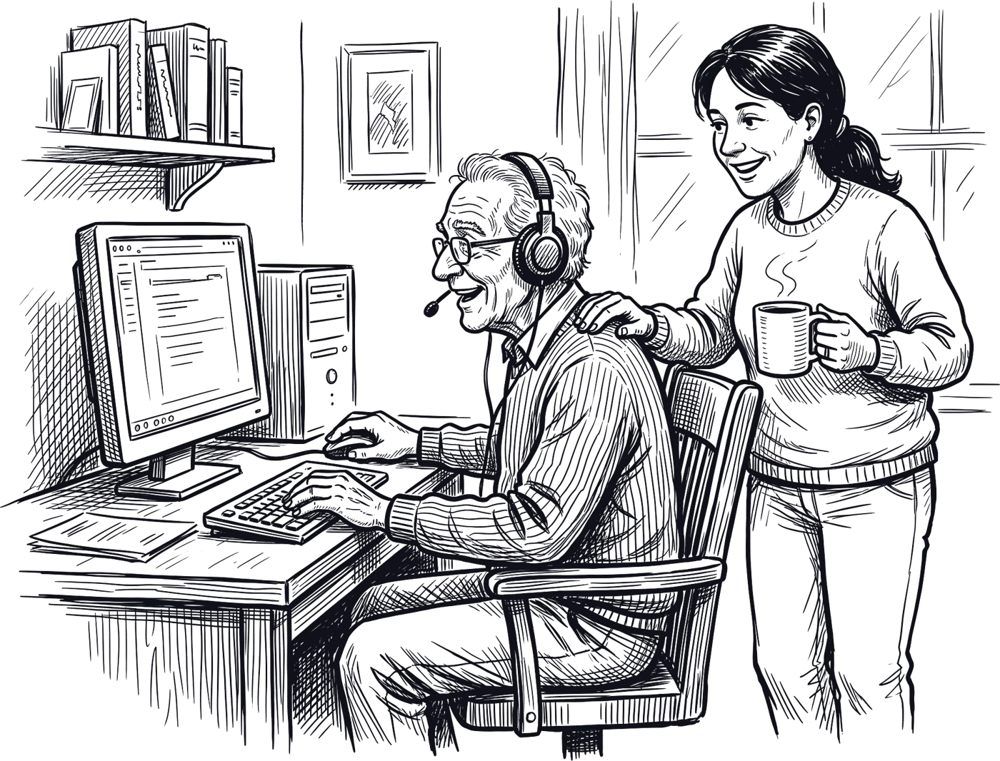

“What's on my screen?”
Where you are, pop-ups first, three things that matter. Photos described by vision.
The voice that uses your computer for you


 “yes?”
Ctrl+Alt+M
“yes?”
Ctrl+Alt+M
A voice agent for Windows, heard by AssemblyAI, for people who can't see the screen.
team revived · lablab.ai × AssemblyAI Voice Agent Hackathon · September 2026
“Button, button, button.”
That is what a screen reader says when an app doesn't label its buttons. Many don't. Blind users then need a sighted person to do it for them, and older users give up.
Source: WebAIM Million, 2024–25.
business valueEstimate: 4 h a week of sighted help + 1 h lost, at €15/h, plus missed online prices. Sources: Bourne et al., Lancet Global Health 2021, GBD 2019 (43 M blind + 295 M); Marques et al., eClinicalMedicine 2021; WHO.
business valueYou say what you want in plain words. Iris does it in any app on your PC, tells you what happened, and waits for your spoken yes before anything that sends, pays or deletes.
A real run on amazon.it, retold in short.
presentation| Layer | Used when | Needs the app's developer? |
|---|---|---|
| 1 · An API | The service has one: Gmail through MCP, web pages through browser shortcuts | No |
| 2 · The tree | Kev reads the controls Windows already sees, in about 230 ms | No |
| 3 · The pixels | Unlabelled icons and custom-drawn apps: Claude looks at the screen like a sighted helper | No |
Proof: Telegram Desktop (unlabelled send button), Amazon (checkout), Gmail (API). 10 of 10 unlabelled icons found.
| Errand | What you hear | What it proves |
|---|---|---|
| Gmail | “Did Peter write?” It reads the email, writes your reply, asks “Send it to Peter?”, and asks again when you sound unsure | API first, spoken yes |
| Telegram | “Tell Peter I'm running late.” The send button has no label; vision finds it | Works where screen readers stop |
| Amazon | Fills the basket, names the price, and “No, wait” means nothing is bought | Money needs a clear yes |
Every clip is a real, continuous take on test accounts; sped-up clips are marked 2×. Video and live page: whom-m0rty.github.io/Iris-voice-agent
Universal-Streaming turns speech into text as you talk.
streamingOne JSON decision per turn: what to say, which tool.
~2.5 s per turnOpen-weights decision model picks each control from the tree.
234 msOnly when the tree is empty: looks, then snaps to the real control.
3.2 sWord list + Kev decide what is risky; your exact words decide yes.
129 msThe fast part does almost all the work. The slow part steps in only when it has to. Kev, vision and yes/no latencies: bench/bench_full.py on an RTX 5060 Ti. Brain turn time seen in live runs.
Passwords never reach a model: code types them from Windows Credential Manager. Apps on the do-not-touch list are never read or clicked. Muted, a pending question can only end as a no.
Measured with bench/bench_full.py on our own test sets, 26.09.2026.
application of technologyWhere you are, pop-ups first, three things that matter. Photos described by vision.
Says where you are and what box is open. Never closes it without asking.
Does the task slowly, explaining each step in plain words. It teaches as it goes.
Repeats the last reply word for word, at once.
Pause length set by voice, remembered next time.
Sounds for thinking, done and error. Silence never leaves you guessing.

“Mum calls me every day to fix her email.” Remote setup, a daily log, alerts when she's stuck.
€9–12 / month
Rehab agencies, Access to Work, blind associations: budgets exist for approved tools.
€150–400 / seat / year
Internal apps that will never be made accessible become usable, with audit log and do-not-touch list.
€20–40 / seat / month
Older customers call support for what the app could do. Connect an API; every call avoided is saved cost.
per active user or task
Prices are our estimates for discussion.
business valueThe law. The European Accessibility Act has applied since 28 June 2025 to banking, shopping and telecom.
Age. 1 in 6 people over 60 by 2030 (WHO).
Cost. Voice AI is now fast and cheap enough to do the task itself, where the alternative is a sighted helper's hour.
| When | Move | Proof |
|---|---|---|
| Q1 | Free beta with two blind associations and 20 families | Tasks done without help |
| Q2 | Family plan, case studies | Month-two retention |
| Q3 | One funder's approved list; first employer pilot | First funded seats |
| Q4 | Bank or telco pilot: bills and balances through their API | Support calls avoided |
whom-m0rty.github.io/Iris-voice-agent · github.com/Whom-m0rty/Iris-voice-agent